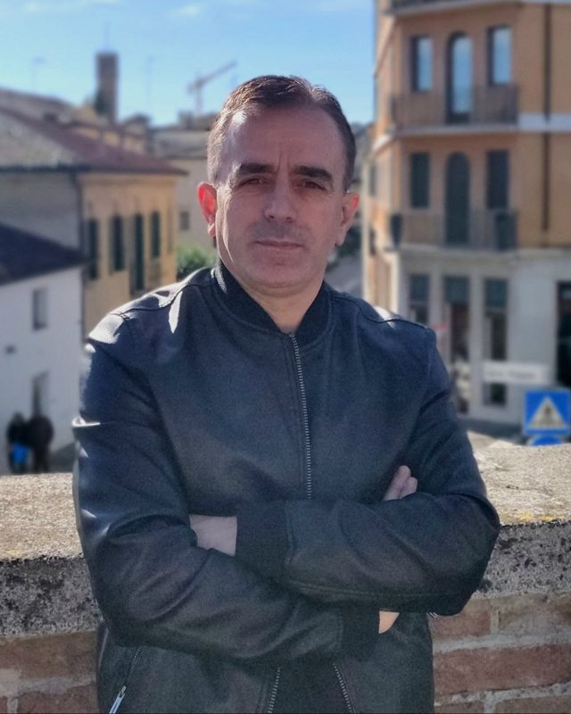

Auto Workshop Pro
In produzione · v1.3.0Gestionale offline per autofficine: preventivi, storico veicoli, anagrafiche clienti, fatturazione e gestione permessi per ruolo. Versione base gratuita per sempre, versione Premium con pagamento unico.
Kastriot Lleshi
Software engineer — Venezia, IT
Sono uno sviluppatore software laureato in Informatica all'Università Ca' Foscari di Venezia. Lavoro professionalmente nel settore della robotica, e nel tempo libero sviluppo applicazioni che risolvono problemi concreti per persone e settori spesso trascurati dal software "generalista".
Ogni progetto che trovi qui nasce da un bisogno reale, viene sviluppato con la stessa cura tecnica che applico nel mio lavoro quotidiano, e viene mantenuto attivamente nel tempo.

K. Lleshi Venezia, IT
Gestionale offline per autofficine: preventivi, storico veicoli, anagrafiche clienti, fatturazione e gestione permessi per ruolo. Versione base gratuita per sempre, versione Premium con pagamento unico.
Trasforma qualsiasi testo in voce naturale: incolla un testo, importa un file o una pagina web e ascoltalo con voci neurali in decine di lingue. Audiolibri a capitoli e salvataggio MP3.
Monitoraggio in tempo reale degli eventi sismici, con notifiche push e dettagli accurati per ogni evento.
Esplorazione del design moderno e dello sviluppo frontend, realizzata in ambito universitario.
Per supporto tecnico su un progetto, richieste di licenza o segnalazioni, scrivimi direttamente: rispondo personalmente a ogni messaggio.